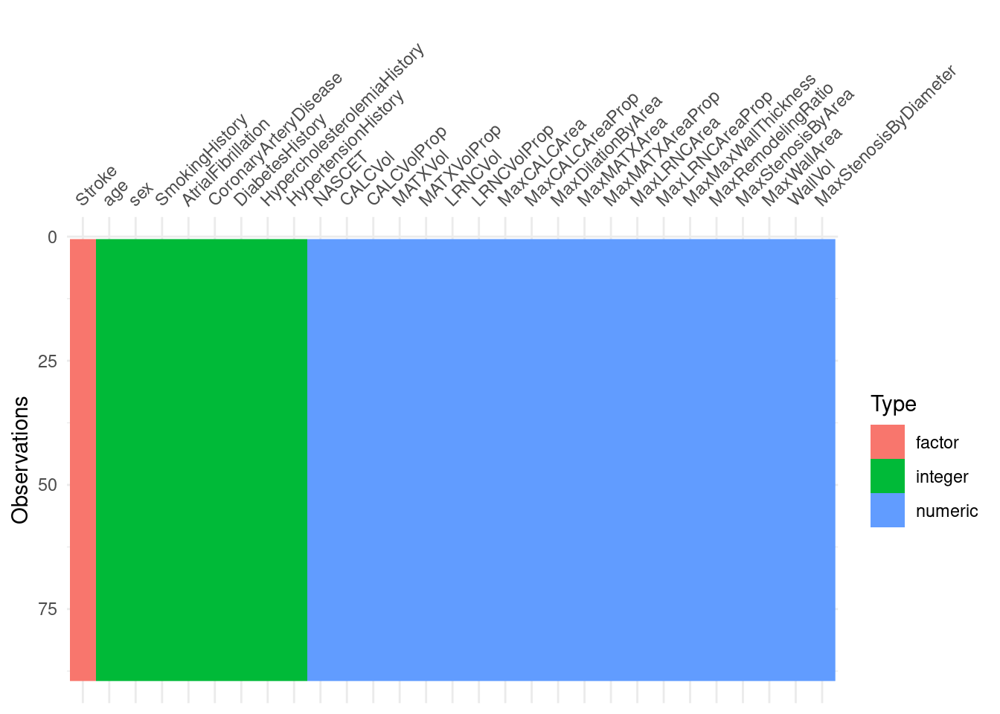
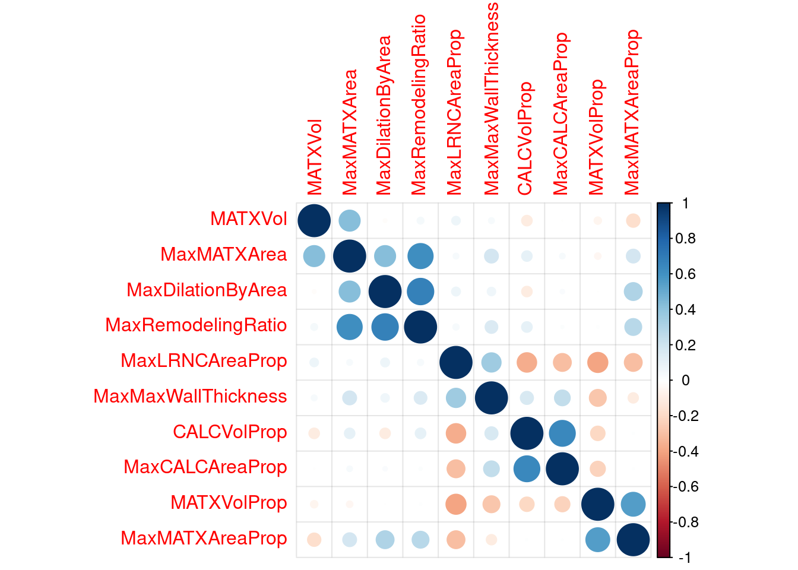

2.2 Example 1
Code for Ischemic Stroke case study. Code requires these packages, across all of Chapter 2:
library(corrplot)
library(utils)
library(pROC)
library(plotly)
library(caret)
library(patchwork)
library(tidymodels)
theme_set(theme_bw())Load the stroke_data.R.data from the Ischemic_Stroke folder here: https://github.com/topepo/FES/tree/master/Data_Sets
load(url("https://github.com/topepo/FES/blob/master/Data_Sets/Ischemic_Stroke/stroke_data.RData?raw=true"))
load(url("https://github.com/topepo/FES/blob/master/02_Predicting_Risk_of_Ischemic_Stroke/stroke_rfe.RData?raw=true"))#pre_split data how many in each class by set
stroke_train %>%
count(Stroke) %>%
mutate(Data = "Training") %>%
bind_rows(
stroke_test %>%
count(Stroke) %>%
mutate(Data = "Testing")
) %>%
spread(Stroke, n)## Data N Y
## 1 Testing 18 19
## 2 Training 44 45#sampling using tidymodels/rsample package
all_stroke <- bind_rows(stroke_train, stroke_test) #put all the data back together
tidy_sample <- #sample, but fixing proportion of Stroke between test and train
initial_split(all_stroke, prop = 0.71, strata = Stroke)
tidy_testing <- testing(tidy_sample) #extract testing
tidy_training <- training(tidy_sample) #extract training
tidy_training %>%
count(Stroke) %>%
mutate(Data = "Training") %>%
bind_rows(
tidy_testing %>%
count(Stroke) %>%
mutate(Data = "Testing")
) %>%
spread(Stroke, n)## Data N Y
## 1 Testing 18 19
## 2 Training 44 45# distribution of training and testing is either exactly the same or one off depending on seed2.2.1 Predictor Quality
The first thing is to just look at your data:
- what’s missing
- what’s normal(ish)
- what’s the range
- what’s the data type
dplyr’s glimpse is a good starting point.
dplyr::glimpse(tidy_training)## Rows: 89
## Columns: 29
## $ Stroke <fct> N, N, N, N, N, N, N, N, N, N, N, N, N, N, …
## $ NASCET <dbl> 0, 0, 0, 0, 0, 0, 0, 0, 0, 0, 0, 0, 0, 0, …
## $ CALCVol <dbl> 235.25260, 31.43360, 360.73754, 433.34638,…
## $ CALCVolProp <dbl> 0.070442702, 0.016164769, 0.073350960, 0.1…
## $ MATXVol <dbl> 3156.835, 3032.861, 4444.045, 3106.593, 24…
## $ MATXVolProp <dbl> 0.7599582, 0.8133063, 0.7839963, 0.7520699…
## $ LRNCVol <dbl> 224.87171, 368.56066, 277.26275, 36.50728,…
## $ LRNCVolProp <dbl> 0.09108513, 0.13398944, 0.06073955, 0.0146…
## $ MaxCALCArea <dbl> 12.350494, 7.130660, 21.297476, 27.488064,…
## $ MaxCALCAreaProp <dbl> 0.3657684, 0.2112469, 0.3862498, 0.4901225…
## $ MaxDilationByArea <dbl> 520.98259, 91.72005, 60.42487, 240.78404, …
## $ MaxMATXArea <dbl> 71.24743, 27.21084, 43.43857, 38.78870, 36…
## $ MaxMATXAreaProp <dbl> 0.9523705, 0.9455539, 0.9526153, 0.9439308…
## $ MaxLRNCArea <dbl> 21.686815, 6.434661, 9.403324, 3.242581, 3…
## $ MaxLRNCAreaProp <dbl> 0.42957812, 0.28151013, 0.35606305, 0.0725…
## $ MaxMaxWallThickness <dbl> 2.409943, 2.540334, 3.411158, 3.695132, 4.…
## $ MaxRemodelingRatio <dbl> 5.697931, 1.739927, 2.059370, 2.909791, 2.…
## $ MaxStenosisByArea <dbl> 18.99554, 30.23761, 41.56107, 42.17789, 43…
## $ MaxWallArea <dbl> 106.20676, 33.36714, 62.27910, 59.76256, 5…
## $ WallVol <dbl> 4192.170, 3917.040, 5814.552, 2489.344, 29…
## $ MaxStenosisByDiameter <dbl> 10.54411, 18.64620, 36.52606, 31.82890, 33…
## $ age <int> 72, 76, 82, 83, 85, 56, 60, 70, 63, 77, 90…
## $ sex <int> 1, 1, 0, 0, 0, 0, 1, 1, 1, 1, 0, 1, 1, 0, …
## $ SmokingHistory <int> 1, 1, 1, 0, 1, 1, 0, 1, 0, 0, 1, 0, 0, 1, …
## $ AtrialFibrillation <int> 0, 0, 0, 1, 0, 0, 0, 0, 0, 0, 1, 0, 0, 0, …
## $ CoronaryArteryDisease <int> 0, 0, 1, 1, 1, 0, 0, 0, 0, 0, 1, 1, 0, 1, …
## $ DiabetesHistory <int> 0, 1, 0, 0, 0, 0, 0, 1, 0, 0, 0, 0, 0, 0, …
## $ HypercholesterolemiaHistory <int> 0, 1, 0, 0, 1, 0, 0, 1, 1, 1, 0, 0, 0, 0, …
## $ HypertensionHistory <int> 1, 1, 1, 1, 1, 0, 0, 1, 1, 1, 1, 1, 0, 1, …# skimr is better (by a lot)
# https://github.com/ropensci/skimr
skimr::skim(all_stroke)| Name | all_stroke |
| Number of rows | 126 |
| Number of columns | 29 |
| _______________________ | |
| Column type frequency: | |
| factor | 1 |
| numeric | 28 |
| ________________________ | |
| Group variables | None |
Variable type: factor
| skim_variable | n_missing | complete_rate | ordered | n_unique | top_counts |
|---|---|---|---|---|---|
| Stroke | 0 | 1 | FALSE | 2 | Y: 64, N: 62 |
Variable type: numeric
| skim_variable | n_missing | complete_rate | mean | sd | p0 | p25 | p50 | p75 | p100 | hist |
|---|---|---|---|---|---|---|---|---|---|---|
| NASCET | 0 | 1 | 0.35 | 0.48 | 0.00 | 0.00 | 0.00 | 1.00 | 1.00 | ▇▁▁▁▅ |
| CALCVol | 0 | 1 | 199.45 | 213.49 | 4.02 | 77.12 | 146.76 | 253.95 | 1517.54 | ▇▂▁▁▁ |
| CALCVolProp | 0 | 1 | 0.07 | 0.06 | 0.00 | 0.04 | 0.06 | 0.10 | 0.44 | ▇▂▁▁▁ |
| MATXVol | 0 | 1 | 3074.68 | 738.98 | 939.34 | 2525.41 | 3070.49 | 3596.27 | 4821.52 | ▁▅▇▇▂ |
| MATXVolProp | 0 | 1 | 0.77 | 0.06 | 0.48 | 0.75 | 0.78 | 0.81 | 0.87 | ▁▁▂▇▇ |
| LRNCVol | 0 | 1 | 387.00 | 307.26 | 15.66 | 156.85 | 317.70 | 508.37 | 1612.40 | ▇▅▂▁▁ |
| LRNCVolProp | 0 | 1 | 0.11 | 0.07 | 0.01 | 0.06 | 0.10 | 0.15 | 0.49 | ▇▅▁▁▁ |
| MaxCALCArea | 0 | 1 | 20.40 | 13.13 | 1.75 | 10.86 | 16.54 | 26.77 | 63.35 | ▇▇▃▁▁ |
| MaxCALCAreaProp | 0 | 1 | 0.35 | 0.16 | 0.01 | 0.24 | 0.33 | 0.42 | 0.96 | ▂▇▅▁▁ |
| MaxDilationByArea | 0 | 1 | 451.18 | 870.06 | 15.53 | 78.83 | 150.26 | 370.28 | 5920.63 | ▇▁▁▁▁ |
| MaxMATXArea | 0 | 1 | 65.49 | 58.05 | 17.19 | 36.63 | 45.73 | 67.48 | 341.12 | ▇▁▁▁▁ |
| MaxMATXAreaProp | 0 | 1 | 0.95 | 0.09 | 0.83 | 0.94 | 0.95 | 0.96 | 1.94 | ▇▁▁▁▁ |
| MaxLRNCArea | 0 | 1 | 17.62 | 17.83 | 1.26 | 6.82 | 12.87 | 20.51 | 134.34 | ▇▂▁▁▁ |
| MaxLRNCAreaProp | 0 | 1 | 0.33 | 0.15 | 0.03 | 0.20 | 0.32 | 0.44 | 0.74 | ▃▇▆▅▁ |
| MaxMaxWallThickness | 0 | 1 | 5.86 | 9.23 | 1.31 | 3.62 | 4.72 | 5.51 | 83.56 | ▇▁▁▁▁ |
| MaxRemodelingRatio | 0 | 1 | 4.75 | 4.48 | 1.21 | 2.31 | 3.22 | 5.35 | 27.88 | ▇▁▁▁▁ |
| MaxStenosisByArea | 0 | 1 | 74.80 | 19.67 | 19.00 | 61.81 | 79.34 | 90.00 | 100.00 | ▁▃▃▇▇ |
| MaxWallArea | 0 | 1 | 89.94 | 74.97 | 19.97 | 53.21 | 66.67 | 92.80 | 454.17 | ▇▂▁▁▁ |
| WallVol | 0 | 1 | 4156.53 | 1083.81 | 1416.75 | 3464.17 | 4056.41 | 5066.84 | 6306.81 | ▁▅▇▆▃ |
| MaxStenosisByDiameter | 0 | 1 | 63.76 | 22.64 | 10.54 | 47.63 | 63.42 | 78.97 | 100.00 | ▁▆▇▅▆ |
| age | 0 | 1 | 72.10 | 10.83 | 39.00 | 65.00 | 72.00 | 80.00 | 90.00 | ▁▂▇▇▇ |
| sex | 0 | 1 | 0.56 | 0.50 | 0.00 | 0.00 | 1.00 | 1.00 | 1.00 | ▆▁▁▁▇ |
| SmokingHistory | 0 | 1 | 0.58 | 0.50 | 0.00 | 0.00 | 1.00 | 1.00 | 1.00 | ▆▁▁▁▇ |
| AtrialFibrillation | 0 | 1 | 0.12 | 0.33 | 0.00 | 0.00 | 0.00 | 0.00 | 1.00 | ▇▁▁▁▁ |
| CoronaryArteryDisease | 0 | 1 | 0.28 | 0.45 | 0.00 | 0.00 | 0.00 | 1.00 | 1.00 | ▇▁▁▁▃ |
| DiabetesHistory | 0 | 1 | 0.22 | 0.42 | 0.00 | 0.00 | 0.00 | 0.00 | 1.00 | ▇▁▁▁▂ |
| HypercholesterolemiaHistory | 0 | 1 | 0.53 | 0.50 | 0.00 | 0.00 | 1.00 | 1.00 | 1.00 | ▇▁▁▁▇ |
| HypertensionHistory | 0 | 1 | 0.77 | 0.42 | 0.00 | 1.00 | 1.00 | 1.00 | 1.00 | ▂▁▁▁▇ |
The book says original dataset has 4 missing data points, but already been median imputed via recipes::step_impute_median()
imputation methhods discussed more in Chapter 8, some models hate missing data
if you have missing data… use naniar/visdat to visualize datasets and understand where you’re missing data getting-started-w-naniar
visdat::vis_dat(tidy_training)
# https://bookdown.org/max/FES/numeric-one-to-one.html#numeric-one-to-one
# this is a plot of the distribution of MaxLRNCArea, very right skewed
fig_2_2_a <-
all_stroke %>%
ggplot(aes(x = MaxLRNCArea)) +
geom_histogram(bins = 15, col = "#D53E4F", fill = "#D53E4F", alpha = .5) +
xlab("MaxLRNCArea") +
ylab("Frequency") +
ggtitle("(a)") +
theme_bw()
fig_2_2_a# same plot but after yeojohnson transformmation, become normal-like
fig_2_2_b <-
recipe(Stroke ~ ., data = all_stroke) %>%
step_YeoJohnson(all_predictors()) %>%
prep(.) %>%
bake(., new_data = NULL) %>%
ggplot(aes(x = MaxLRNCArea)) +
geom_histogram(bins = 15, col = "#D53E4F", fill = "#D53E4F", alpha = .5) +
xlab("Transformed MaxLRNCArea") +
ylab("Frequency") +
ggtitle("(b)") +
theme_bw()
#sidebyside with patchwork
fig_2_2_a + fig_2_2_b2.2.2 understanding interactions and multicollinearity
some models hate correlated traits
this only looks at imaging traits, (why is it called risk?)
risk_train <-
recipe(Stroke ~ ., data = stroke_train) %>%
step_center(all_of(VC_preds)) %>% # center the data
step_scale(all_of(VC_preds)) %>% # scale the data
step_YeoJohnson(all_of(VC_preds)) %>% # YeoJohnson transform https://recipes.tidymodels.org/reference/step_YeoJohnson.html
prep(.) %>%
bake(., new_data = NULL) %>% # juice is superseded by bake
select(-one_of(c("Stroke", "NASCET", risk_preds))) #select everything but these
risk_corr <- cor(risk_train) #make a correlation matrix
corrplot(risk_corr, addgrid.col = rgb(0, 0, 0, .05), order = "hclust") #plot that# you can remove these with step_corr(all_predictors(), threshold = 0.75) %>%
risk_train_step_corr <-
recipe(Stroke ~ ., data = stroke_train) %>%
step_center(all_of(VC_preds)) %>% # center the data
step_scale(all_of(VC_preds)) %>% # scale the data
step_YeoJohnson(all_of(VC_preds)) %>% # YeoJohnson transform https://recipes.tidymodels.org/reference/step_YeoJohnson.html
step_corr(all_predictors(), threshold = 0.75) %>% # remove "extra" predictors with correlations higher than 0.75
prep(.) %>%
bake(., new_data = NULL) %>% # juice is superseded by bake
select(-one_of(c("Stroke", "NASCET", risk_preds))) #select everything but these
risk_corr_step_corr <- cor(risk_train_step_corr) #make a correlation matrix
corrplot(risk_corr_step_corr, addgrid.col = rgb(0, 0, 0, .05), order = "hclust") #plot that
#BUT WE'RE NOT DOING THAT YET! Chapter 3 shows more methods on this.